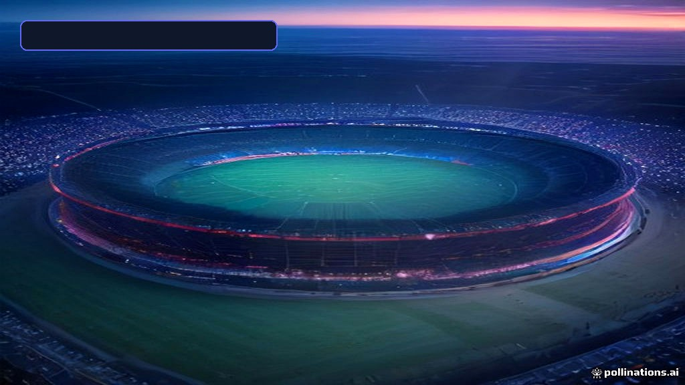

Entertainment & Sci-Fi
• 2026-10-17
• ⏱️ 8 min read
Wisconsin vs UCLA: Everything You Need to Know in 2026
Explore the ultimate 2026 Wisconsin vs UCLA guide! Unpack Big Ten dynamics, historical head-to-head stats, tactical matchups, and season predictions.

SPONSORED ADVERTISEMENT
Wisconsin vs UCLA: Everything You Need to Know in 2026\n\n## Executive Summary / Key Takeaways\n\n- The New Big Ten Landscape: As the expanded Big Ten Conference settles into its modern era, the matchup between the Wisconsin Badgers and the UCLA Bruins has evolved into one of the most intriguing cross-country conference rivalries.\n- Clash of Styles: The showdown pits traditional Midwest physical line play and disciplined run schemes against West Coast perimeter dynamic athleticism and high-tempo spread offense concepts.\n- Playoff Implications: With the expanded College Football Playoff field, mid-season and late-season Big Ten matchups like Wisconsin vs UCLA carry massive weight for bowl seeding and post-season qualification.\n- Iconic Venues: Games hosted at Camp Randall Stadium in Madison or The Rose Bowl in Pasadena offer two vastly different yet iconic atmosphere experiences for fans and student-athletes alike.\n\n---\n\n## Table of Contents\n1. Introduction: The Big Ten Realignment Era\n2. Historical Head-to-Head & Legacy\n3. Tactical Deep-Dive: Offense vs Defense\n4. Key Positional Matchups & Roster Depth\n5. Venue & Atmosphere Comparison\n6. Statistical Breakdown & Comparison\n7. Pros & Cons: Program Trajectories\n8. 2026 Game Outlook & Predictions\n\n---\n\n\n## 1. Introduction: The Big Ten Realignment Era\n\nWhen UCLA officially transitioned into the Big Ten Conference alongside fellow West Coast institutions, college athletics experienced a seismic paradigm shift. What used to be a rare non-conference intersection or a marquee Rose Bowl Game pairing has transformed into a critical annual or bi-annual conference battle with immediate standings implications.\n\nIn 2026, the collision between Wisconsin and UCLA represents far more than 60 minutes of college football. It is a fundamental benchmark test of how well traditional Big Ten powerhouses adapt to modern West Coast athletic profiles, and how effectively former Pac-12 programs withstand the attrition and physicality required to survive a full Big Ten campaign.\n\nWhether you are a casual college football fan, an avid sports bettor analyzing tactical trends, or a dedicated alumnus tracking your team's march toward the Big Ten Championship Game, this complete 2026 breakdown covers every angle of the Wisconsin vs UCLA matchup.\n\n---\n\n\n## 2. Historical Head-to-Head & Legacy\n\nHistorically, Wisconsin and UCLA shared a storied relationship defined by classic Rose Bowl encounters and non-conference home-and-home series. Across their storied histories, the meetings between these two programs have yielded memorable moments in college football lore.\n\n### Memorable Moments\n- The 1994 Rose Bowl: One of the most famous games in Wisconsin football history occurred on January 1, 1994, when the Badgers defeated UCLA 21-16 to secure their first Rose Bowl victory in decades, setting off massive celebrations across Badgerville.\n- The 1999 Rose Bowl: Wisconsin repeat heroics came in 1999, as Ron Dayne delivered an unforgettable MVP performance, rushing for 246 yards and leading Wisconsin to a thrilling 38-31 victory over the Bruins.\n- Modern Conference Integration: With UCLA entering the Big Ten conference structure, the historic grandeur of postseason bowls has translated into high-stakes regular-season scheduling, making every matchup vital for tiebreakers.\n\n---\n\n\n## 3. Tactical Deep-Dive: Offense vs Defense\n\nUnderstanding how Wisconsin and UCLA match up requires evaluating their core tactical philosophies.\n\n
SPONSORED ADVERTISEMENT
Tags:
#Wisconsin Badgers#UCLA Bruins#Big Ten Football#College Football 2026#NCAA Sports
⚡
LatestTech Editorial Team
Researched, verified, and curated by the LatestTech Hub editorial team. Dedicated to bringing actionable insights, deep benchmarks, and practical tech guides.